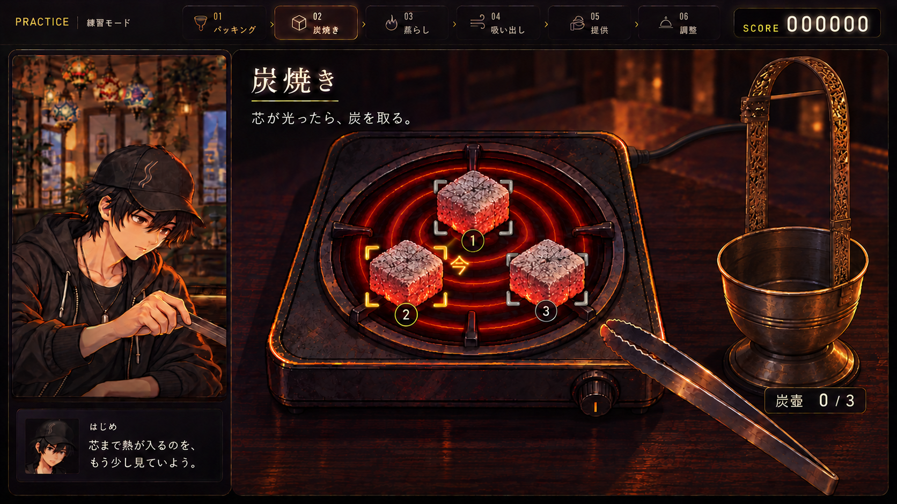
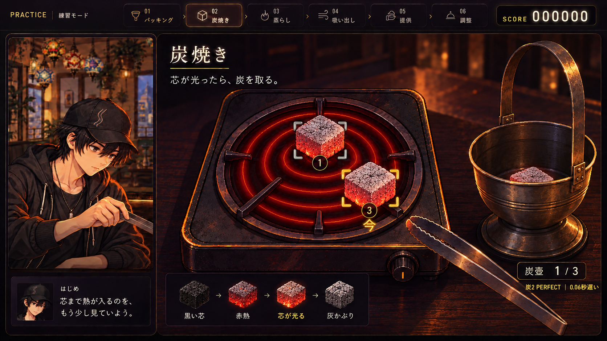

白〜灰色の膜と、赤い熾き
焼け頃の炭に大きな黒い面を残さず、圧縮炭の細かな粒と灰の膜を描く。溶岩のような割れ目・白い火口を見直した。
水煙前線 -EN:CODE- ／ A × B HYBRID
灰に覆われた赤い熾き。取った炭は、一つの炭壺へ。

薄い灰と赤い熾きで焼け具合を見せ、「今」の合図は小さな角括弧で伝える。コンロの炭3個と、空の炭壺。
灰と赤い熾きで炭を見る。押す場所は角括弧と番号で明確に。

取った炭は同じ深い炭壺へ。残りの炭を観察し続けられる。
焼け頃の炭に大きな黒い面を残さず、圧縮炭の細かな粒と灰の膜を描く。溶岩のような割れ目・白い火口を見直した。
深い金属の受け部、持ち手、台座を備える炭壺。3つの収納区画を使わず、取った炭を同じ容器へまとめる。
番号・角括弧・「今」を炭の近くに置く。各炭の評価や誤差は短い記録に分け、操作する炭と炭壺の中を覆わない。
遊びの核はそのまま：コンロの炭を、いいタイミングで直接取る。
灰と熾きは実物に合わせ、瞬間の光と「今」はゲームの判定を知らせる合図にする。
実物参考と描き分けの基準 ／ 前後の一覧画像 ／ 初回の3案
水煙前線 -EN:CODE- ／ A × B HYBRID
Aの寄り画とBの押しやすさを統合。実物のココナッツ炭・炭壺を写真で確認して修正。
灰に覆われた炭と赤い熾き。小さな「今」の合図で取る瞬間を示す。
三つの仕切りをなくし、取った炭を一つの深い炭壺へ。
圧縮された角炭の細かな灰と、下から透ける赤い熾きを描く。
炭壺の持ち手・深い受け部・台座を、実物の構造に合わせる。
回収数と短い判定記録は壺の脇へ。操作中の炭を文字で覆わない。